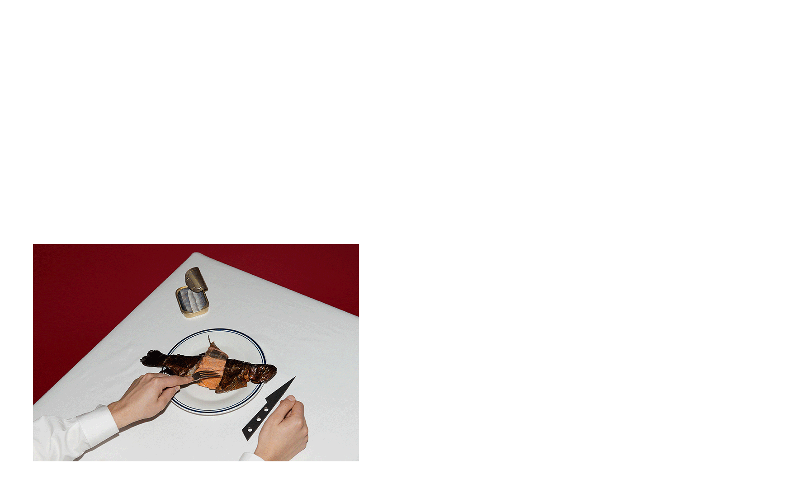
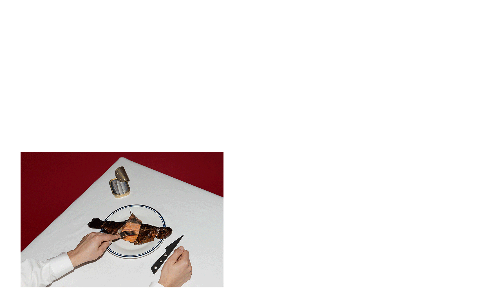

We don't expect all art, films and literature to be pretty so why is it we expect our meals to be? In the pursuit of happiness, pleasantness and approval amongst our peers we have ironed out the grit in the world; And for what we wonder. Sweet natured niceness? Long lived loveliness? Pleasant nothings which seek to soothe?
This event channels a Brutalist’s triumphant indifference to commonality. A deliberate flouting of conventional ideas of beauty. Brutalism has always sparked vehement debate about the necessity and/or irrelevance of aesthetics. A debate which Otis Armada is determined to bring back to the surface. Otis. Brutal. is determined to reclaim the core elements of food, art, wine and music which evade superficiality. Elements that happily triumph in discordance with the norm. Those bestial successes that parade proudly as concrete monstrosities of culture. Over four (4) carefully curated sittings Otis will deliver a raw barrage of gratifying and generous food, art, music and wine.
surface.
Otis. Brutal. is part of Brutalist Block Party – a series of events presented by Assemble Papers and Open House Melbourne.
122 Roseneath St, Clifton Hill
The Otis Armada team prides ourselves on approaching a feast in no style but our own. We want our experience to be as gratifying to the eyes and ears as it is to the palate. Over the course of a few hours a parade of curated food, wine and art will be served. Otis Armada salutes communal eating so it is likely you will meet some other deviants you ought to revel with. We will all be sitting together and served at once. Before and in-between your five courses will be a host of small snacks which will make you think and encourage you to drink. Beer, Wine and some ruff stuff will be paired with each plate. You won’t leave hungry, you won’t leave empty handed and we advise you don’t drive.
In some cases specific allergies can be accommodated. Unfortunately we are unable to provide vegetarian alternatives.
Laura Clauscen, Lauren Stephens & Fred Mora (Practise Studio Practise, Lucky Prawn, Sugar Prawn). Across the whole Otis Creative team is a mixed shopping bag of projects spanning from installation design to bespoke media content. This team is one that concerns themselves on pushing boundaries and bringing never seen before solutions to commonly seen problems. Clients they have worked both with and for consist of Vice, NGV, 1-OK.club, Aesop, Protein Networks, Studio UP, Sample, Ladies of Leisure Magazine, ID Magazine and Captain Morgans.
Gus Carmichael
Gus has dipped in and out of hospitality in a most aerobatic way. From playing and curating music at wine events like Highway One Street Party to selling bottles at Milton Wine shop he has a wide casting net of knowledge and expertise which come into play when we deliver the service we expect from OA.
Ali Currey Voumard
Ex Cumulus Inc, Moon Under Water
Ali has been with Otis since the start. Undoubtedly she is a big part of the creative team but the only one trusted to use a sharp knife and fire, so we call her Chef. At 16, Ali moved to Melbourne from Tasmania to pursue cooking in some of Melbourne’s most renowned kitchens including Cumulus Inc and Moon Under Water. While subscribing to no singular style, Ali’s fascination with raw produce and fermentation always finds it’s way into her creations. Ali is piecing together a crack team of young chefs free of restraint and full of dedication to the cause.
Brutalist Block Party, 6-29 May
Brutalist Block Party is a May-long program of talks, workshops, lunches, dinners, social situations and a weekly produce market – presented by Assemble Papers and Open House Melbourne at 122 Roseneath Street, Clifton Hill (the site of a property development by Wulff Projects, Icon Co and Assemble). It’s a celebration of the under-celebrated – an homage to the site’s Brutalist heritage and to post-war architecture everywhere; a convivial nod to the spirit of community at the heart of this architectural approach.
The program unfurls amidst Brutalist Bollards and Pillars of Contention – a specially commissioned spatial installation by Practise Studio Practise. The Brutalist Bar ensures that the brutalist banter continues before, during and after each event.
Brutalist Block Party is part of a broader Open House Melbourne program called ’What’s the beef with Brutalism?’ – a series of screenings, talks and tours that consider people’s beef with a Béton brut, explore the social significance of the style, and consider what is the new, new brutalism?
Assemble Papers
Founded in 2012, Assemble Papers is an online and biannual print publication for small footprint living, covering art, design, architecture, urbanism, the environment and financial affairs. Reflecting an ‘ethicurean’ approach to life, we stand for optimism. From culture and knowledge through to what we eat and buy, we believe that how we live and what we consume matters. We treat our readership with the utmost respect, as intelligent peers with whom we share values, knowledge and stories. We appeal to both left and right sides of the brain through quirky yet considered content that celebrates ingenuity and inventiveness alongside a thoughtful and practical approach to simplifying the clutter of contemporary life.
Open House Melbourne
Since 2008, Open House Melbourne has been connecting people with good design and architecture in the city. We do this through our annual free weekend in July and through a series of accessible, informative and entertaining talks, tours, workshops and events throughout the year.
We run the popular Open House Weekend at the end of July (30 & 31 in 2016) that opens the doors of significant buildings and spaces that showcase good design, celebrate the importance of heritage preservation, and inform people about how built environment initiatives and issues influence city culture.
By arming people with information about good design and the built environment, and by inspiring them to explore their city, we hope to positively contribute to Melbourne’s future as a culturally rich and liveable city.
info@otisarmada.com
instagram.com/otisarmada
Design & Graphics by Lloyd-Mst
 
